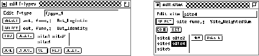
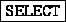
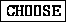
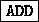
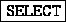

Figure  shows the panels to edit unit
prototypes (f-types) and sites. The change of the f-type is performed
on all units of that type. Therefore, the functionality of all units
assigned to an f-type can easily be changed. The elements in the panel
have the following meaning:
shows the panels to edit unit
prototypes (f-types) and sites. The change of the f-type is performed
on all units of that type. Therefore, the functionality of all units
assigned to an f-type can easily be changed. The elements in the panel
have the following meaning:

: Selects of the activation and output function.

: Chooses the f-type to be changed.
 : Makes the settings/changes permanent. Changes in
the site list are not set (see below).
: Makes the settings/changes permanent. Changes in
the site list are not set (see below).
 ,
,  : Creates or deletes an f-type.
: Creates or deletes an f-type.

, : F-types also specify the
sites of a unit. Therefore these two buttons are necessary to
add/delete a site in the site list.
: F-types also specify the
sites of a unit. Therefore these two buttons are necessary to
add/delete a site in the site list.
Note: The number and the selection of sites can not be changed after the creation of an f-type.
The elements in the edit panel for sites are almost identical. A site is selected for change by clicking at it in the site list.

: Selects the new site function. The change is performed in all sites in the net with the same name.
 : Validates changes/settings.
: Validates changes/settings.
 : Creates a new site.
: Creates a new site.
 : Deletes the site marked in the site list.
: Deletes the site marked in the site list.